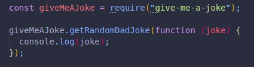

We can work with packages others have created through npm library.
It is also a command line tool to install and manage those packages.
We run npm install followed by the node package in our terminal.
We must make sure we copy the name of the package correctly.
We will get all of its dependencies in a folder called node_modules.
It shouldn't be removed. Neither should package-lock.json
We can then require or import the document, which will have the same name as the name of the package we see on npm.
On the package's documentation, we will see the options we have, we can copy one of the functions and paste it on our index.js file.
We can now run it with node in the terminal, making sure we are inside the path where our file is located.
THIS WILL INSTALL TO THE LOCAL FOLDER, WHEREVER WE ARE AT.
Sometimes we may want to access our package from anywhere we are. We can do this with global packages.
Every package we install will have a file called package.json.
It contains data about the module or package we're working with.
It includes its dependencies, and some of them have their own dependencies along with their version, sometimes only approximately correct.
We can create one ourselves by running npm init.
It will guide us through the process thanks to its built-in walk-trough.
We will now have a file called package.json inside our folder.
Each new package we install in the same folder will now show up as a dependency in the package.json object.
Its not necessary for the dependency to be there, but it keeps a record of everything, and saves it in a shared place.
We don't tend to include the node_modules file when uploading to git and github. It is common to be this way.
This file contains all dependencies.
We can look in the package.json file and do it manually...
We can install them by running npm install.
This will automatically do the process for us.
We should remove useless dependencies from our package.json, that way anyone running this command doesn't download dependencies that are not needed or necessary.